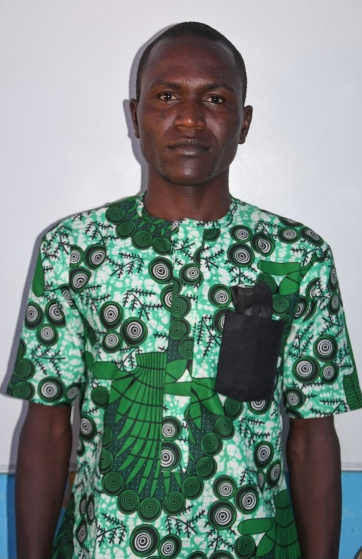
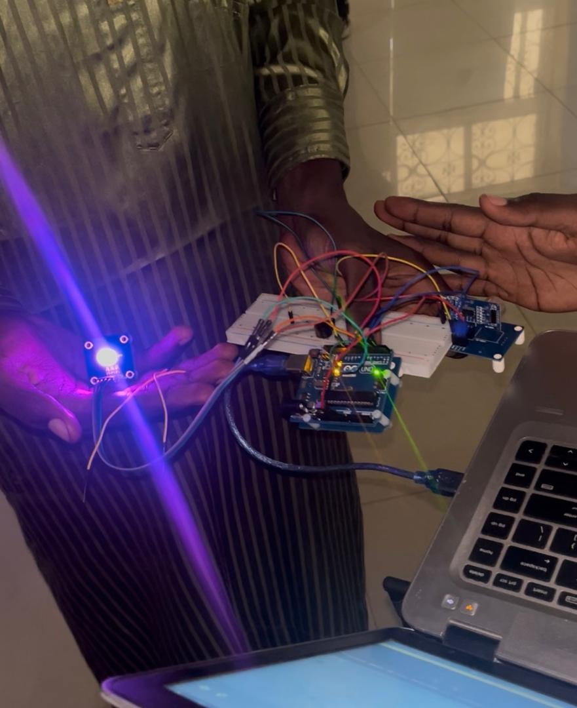

Ndouwe
Green North Zone
Du charbon écologique fabriqué à la main et du reboisement à Garoua.
Voir le projetNous construisons des projets qui nous ressemblent, entre technologie, création et initiatives de terrain.

Un aperçu de ce que nous avons fait. Le détail est sur la page Projets.
Du charbon écologique fabriqué à la main et du reboisement à Garoua.
Voir le projet
Réalisé durant un stage académique : un modèle de vision qui vérifie automatiquement la conformité des visites.
Voir le projet
Une production de séries et de comédies dans le Nord Cameroun.
Voir le projet
Un capteur mesure la distance et une LED change de couleur : bleue quand c'est loin, verte quand on s'approche, violette quand il faut s'arrêter.
Voir le projetNous sommes étudiants en Arts et IA à l'IBAI, Université de Garoua.
En savoir plusUne idée, une question, une collaboration ? Écrivez-nous.